Whitehorse Mountain
- Whitehorse Glacier
Robert and I turned right onto Mine Road and bumped our way to near the end. As we got ready for the climb, a pickup truck arrived with four guys intent on the route. Always happy for more step-kickers, we wished them well and began hiking. At the end of the road is a spectacular view of the route - you really have to tilt your head up to see what you are in for. The lower section of Snow Gulch is a mixture of waterfalls, black wet rock, and brushy tangled slopes. Above, hummocks of snow lead to a few blue-gray crevasses and black false summits.
As Matt Perkins had advised in emailed beta two years before (I’m a pack rat), we took a left fork in the Gulch, soon coming to an impassable waterfall with steep brush slopes on the left, and a somewhat more secure looking brush wall on the right. We chose the latter, grimacing somewhat as we began clawing through the tiny trees on a slithery 40 degree slope. Crampons were pretty useful here!
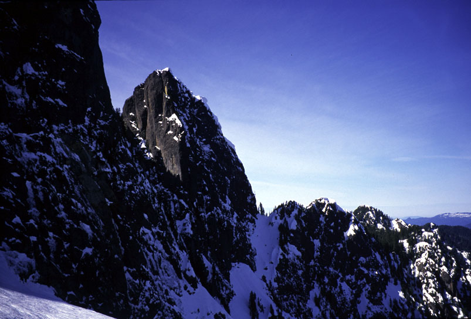
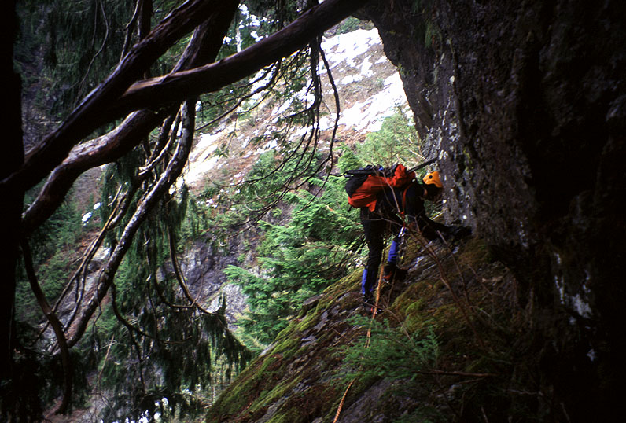
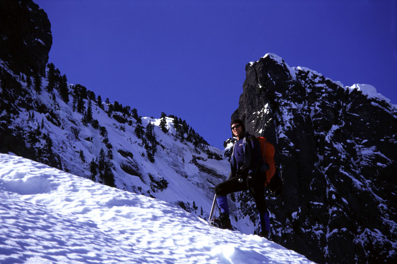
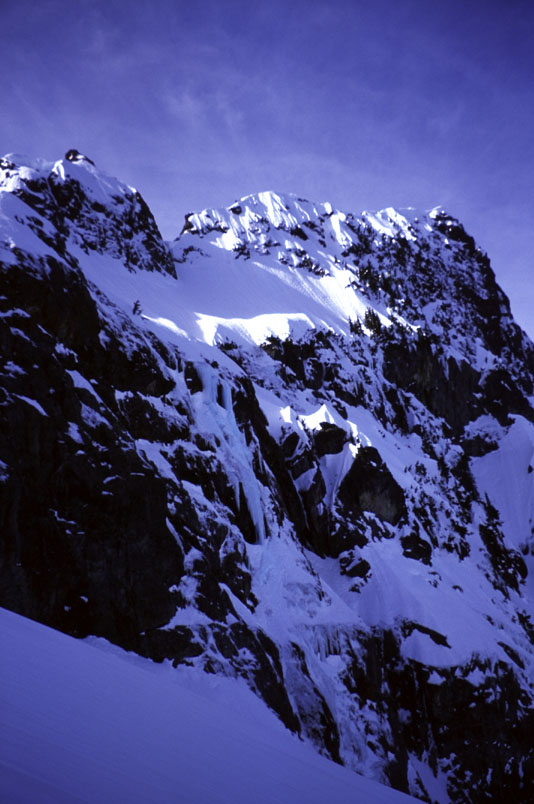
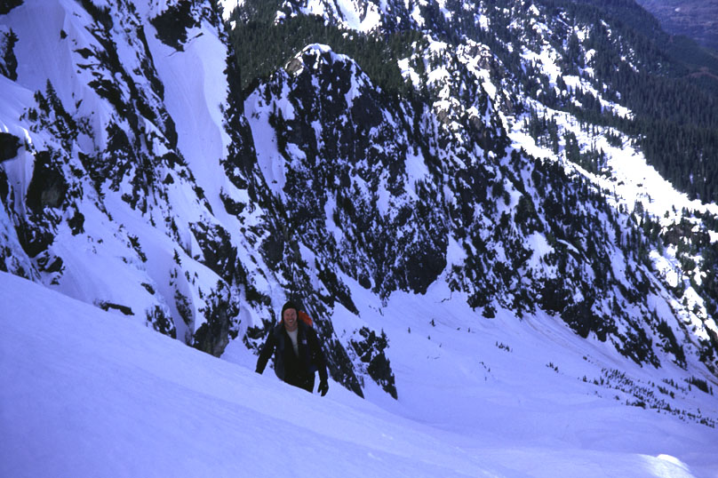
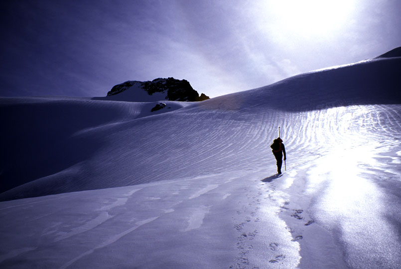
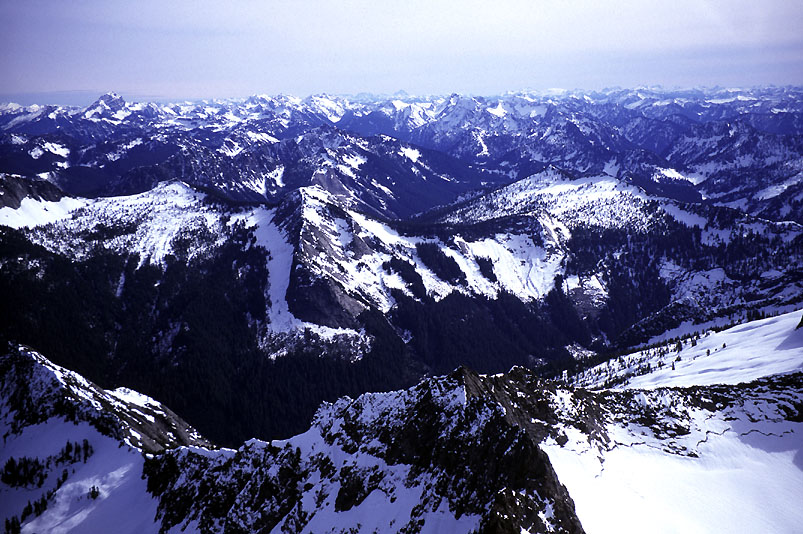
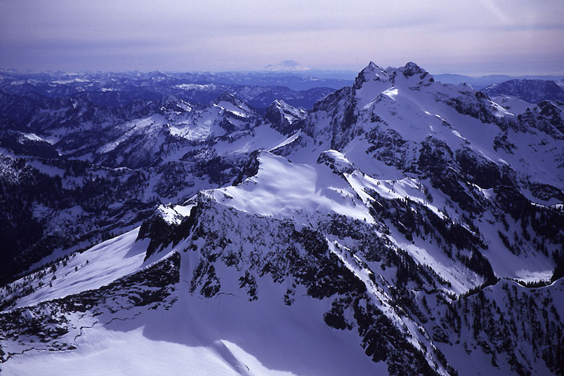
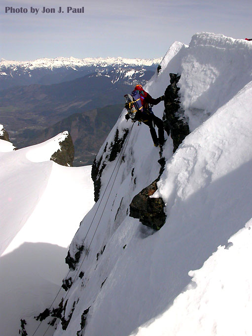
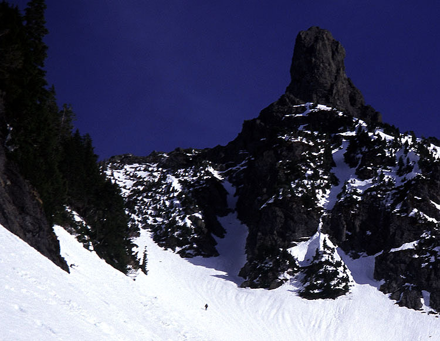
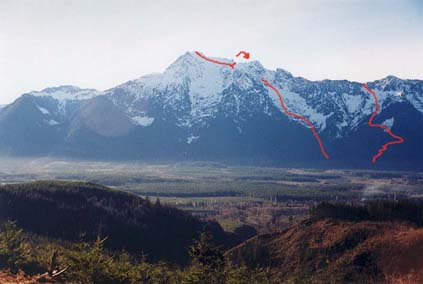
I stopped to pick pine needles out of my eyeballs while Robert took the next leg, trending right to avoid an overhanging wall above. He led back left across a wall with an exciting bouldering problem that depended on equal weight distribution between a barely connected branch, a rock that would fall out if you pulled it the wrong way, and a divot under a moss carpet that would hold one crampon point. This led to a ledge (don’t even try to find this place by the way!) where we roped up for a short pitch further left to easier ground. It was funny to be getting the rope out 4000 feet below the summit, far below timberline.
While I belayed, the party of four amazingly found our tiny perch in the vertical jungle. I began simul-climbing and they asked if the rope was still available, then pointed out that they had their own rope. That was good because I didn’t want to wait for them to do the bouldering problem and gather on the ledge. I started climbing so Robert could reach a tree belay. We didn’t see those guys again, and wondered how we could have helped them. The one protection point on the pitch would have taken a sling, and we imagined that if they had a rope, they would have a sling too.
Brian and his party didn’t elect to cross the moss cliff, instead they found the correct trail on the left side of Snow Gulch. They climbed to 4700 feet but turned around due to time. Brian told me that on the way down they saw 4 more people near the bottom of the Gulch!
A bit tired from fights with the little trees, we continued to the snow-covered hummocks that characterize the middle basin. From here we decided that on the descent we’d definitely go down the right side of the basin (as you are looking up at it), because good snow cover led to a very short cliff we could rappel from. Matt Perkins had done something similar before - it would at least be quicker than the way we’d come up.
On the hard snow, long sessions of ankle-twisting french technique up the slopes made us realize we’d have sore feet later. We had wondered what boots to take, each settling for a more-or-less floppy boot instead of a full-shank model.
Just as we decided dull gray high clouds were going to stay, sections of blue sky began to appear. Would this mountain ever run out of avalanche debries? There must be a constant roar of chunky snow blocks rolling down in this Gulch during a storm. What a mousetrap in the wrong conditions! We started to see interesting cliffs on the right, and crevasses began to appear in the snow, indicating that we were on the Whitehorse Glacier. Slots were so well filled in that we didn’t rope up. The cliffs on the right now had luxurious lines of water ice snaking down, and Robert pointed out a sort of “NE Slab of the Tooth” formation. Interesting snow couloirs and frightening overhanging chimneys laced the cliffs on both sides. We resolved to come back and climb them (as if ;-)).
As we must when visiting this area, we thought about CAndS.Net, Hooter Cave and that great song “You really have to wonder…what’s in there?” (CAndS.Net was a peculiar web site dedicated to rock climbs in the Darrington area. Hooter Cave and the song mentioned were features of the strange and fascinating site, now dead for years.) There is a special mystery about Darrington climbing, fun to comtemplate as we cramponed up endless slopes. I think Hooter Cave was a place where this group would cache their gear, possibly a mile to the south in the rugged Three Fingers/Liberty Peak area. Wow, that’s neat and wierd.
We came to a broad basin with steep exits on the left and right. The right had a bergschrund we’d probably want to rope up for. The left looked gentler. The middle had an impressive curtain of water ice. We decided to go up the middle and veer left below the curtain for nice variety. Too steep for french technique, we would front point for stretches with one hand and one ice pick on the snow, occasionally splaying one foot or the other for a rest. The angle was around 45 degrees for almost 1000 feet. I had to pound my axe in well and rest a few times. All the same, this was the most enjoyable part of the climb, as the cliffs and icefalls were made more brilliant by the exposure in all directions. We emerged onto a ridge crest, really pleased by some softer snow with level kicked steps from a party above. Flopping down for a rest in the sun, we watched this party of three finish the summit pitch.
Wow, that means 3+2+4 = 9 potential climbers on this route today. I tend to think that is a crowd for the route! After I ate some cookies and Robert endured some unappealing “Hickory Farms” cheese, we wobbled our sore legs and feet on to the summit. The last 20 feet were pretty exciting, made easier for us by some good steps and axe-shaft placements made by the group watching us from the summit. The last move required the axe planted in a scrim of water ice over rock and some good balance. We were happy to meet Jon, Vlad and Bob here.
We also met the incredible scene of tortured topography given by territory to the south. No wonder it’s a place of washed-out roads and private fiefdoms like Hooter Cave. Though close to roads and towns, these dim valleys seem ignorant of people. We could see Craig Lakes and Mt. Bullon in front of Three Fingers Mountain. Notable was the West Face of Sloan, like a layer cake of reddish rock with bands of icing. The North Face of Big Four Mountain was distant but unmistakable. To the north and east rose the volcanos and peaks such as Shuksan, Eldorado and Dome. I kept calling Mt. Higgins Mt. Hinman.
It was great to sit for a few minutes. The time was around 1 pm. Not eager to frontpoint down so many steep icy slopes, the five of us decided to go home via Lone Tree Pass. I had been beyond the pass 3 years ago with Peter and Jake (I wish they could have been here today. Robert and I also wished that Theron could join us, but alas! he was suffering from a stomach malady).
We made a 30 meter rappel, tying our rope together with Jon’s. I was the last to descend, and had to carefully position the knot below where the ropes cut into the snow - no one likes to retrieve a stuck rope! Downclimbing took us to easier slopes where we could walk to High Pass at 6000 feet. (note: the USGS map marks the summit in the wrong place, and doesn’t mark High Pass at all. It is on the west edge of the glacier.)
Removing crampons, we glissaded down from High Pass, and began a tiring mile-long traverse. After postholing to exhaustion, Robert and I decided to put on snowshoes. Almost immediately we saw what a bad idea that was. Normally, the MSR snowshoes perform very well on traverses, especially compared to other snowshoe brands. But today, with a sugary 2 inch layer over a hard crust, we were sliding and straining down the slope with every step. They were useless. Soon the five of us were taking turns making a track across the slope. This south side snow was baking, and soon my boots were squishing with water despite a waterproofing application in the morning. I remembered the point to turn up to reach Lone Tree Pass, and we tiredly regained 400 feet. Somewhat crestfallen, at the top we realized that the pass was further away on the ridge. I recognized a distinctive snowy hump as the view spot for pictures 3 years before. We plodded further, almost giving in to descending a gully east of the true pass. Robert and I went 50 feet down, then cautiously concluded it wasn’t worth the risk, as there was a section of gully we couldn’t see. Cliffs? We tiredly (using that word a lot, aren’t I?) climbed back up and plodded on to the pass.
Later, Vlad would look back and discover a cliff blocking that gully, at least 100 feet high. It was a good choice to be prudent!
At the pass we imagined a long glissade run, but it was not to be. Just as on the glacier, slopes were frozen hard. I nearly shredded my pants on a few hundred feet of ice-glissading, then switched back to crampons to walk down a few thousand feet. I didn’t know the time, but it was getting dark. I remember focusing on my little view of feet, ice axe, and slope ahead of me for long periods. I would look up and take in the expanse of country, including Darrington 4000 feet below, and nearly get vertigo from the contrast. Then I’d go back to work.
The trees started to appear, and we continued on suddenly soft snow in snowshoes to the left of a creek leading down. Robert spied some flagging at 2800 feet, and we plunged into the dark forest, soon getting headlamps ready and hoping to find the trail again (which we’d already lost).
Everyone was really tired. Robert looked tired and sunburned, but he kept plunging down through one stand of Devil’s Club after another. I was distracted by thirst - nothing to drink since the summit, and now streams could be heard beneath snow or muddy puddles would wink at me in the glow of my headlamp. But to stop before finding the trail would seal a night of discomfort. So I was content to plunge down in squelching boots and gloves, dreaming of water. Bob, Vlad and Jon were staying high, believing they would hit the trail by travelling north. We didn’t put much faith in the squiggly trail line on the map, and Robert had spent enough time in front looking for the lost trail that it seemed counter-productive. So we said goodbye and kept going down.
But cliffs blocked us, and we came to an alder slope back in sight of our friends. They had seen a piece of the trail above, and were pretty certain it would be found on the other side of the alder. Robert couldn’t imagine anyone building a trail through the alder. I tried mightily to remember 3 years ago - we stumbled out in the dark then, on the trail. Should we go straight down or at least cross the field? Why travel horizonally when we can lose some elevation? We did because Jon was more certain about it than we figured he had a right to be, we knew more cliffs were directly below, and finally - why not? We’ll be coming out in pitch dark anyway.
So we crossed. I remember a funny moment when Robert swung down and across a log by holding three dead stalks of alder as a rope. I tried the same, the alder broke, and I enjoyed an exciting ride through the dark forest. The fact that I had energy to laugh must have been a good thing! Almost across, we heard Jon exclaim “I’m on the trail!”
And that my friends, is why this isn’t a story of yet another unplanned bivy!
The adventure over, we made our way 2000 feet down to the car, chatting about work and climbs future and past. Vlad shared some water with us, and we hiked up the road to my car. An eerie light on the road turned out to be my interior car light. Also, the door was unlocked. After checking the car for mysterious Bulgarians (A fascinating story about a Bulgarian fugitive who hid for years on the slopes of Whitehorse Mountain. Source: http://klipsun.wwu.edu/1998/september/stor3.html), we drove with our new friends to a diner in Arlington where we all competed to eat the most in the form of milk shakes, steak, chicken, potatoes, clam chowder, rolls and other sundries.
This was a great climb to do, at the start of a season where I felt out of shape thanks to more lift-served skiing than climbing. I’m still out of shape, but I can enjoy a good sufferfest anyway. Jon, Vlad and Bob were really cool, thanks for being there guys! A big thanks to Robert! I’m outta here!
Note: The photo with a drawn route in Beckey’s Cascade Alpine Guide is wrong. It is describing a climb of the Sill Glaciers from Wellman Basin. Matt Perkins told Beckey about the mistake a cupla times.